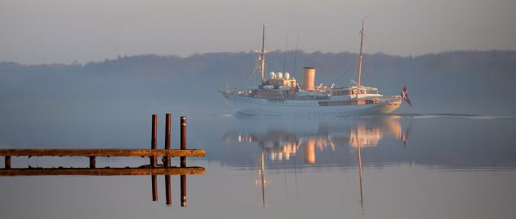

Med 1.530 intakte dele er Flora Danica-stellet ikke alene verdens bedst bevarede pragt-stel fra 1700-tallet, men uden tvivl også verdens vildeste stel, når det kommer til pragt, myter og dekorationer.
Med den nye pragtudstilling om Flora Danica-stellet på Koldinghus bliver det muligt at dykke ned i det storslåede stel og de fascinerende tanker og storpolitiske myter, som stellets gemmer på.
Sat i scene på det skrøbelige hvide porcelæn, der med sine talrige steldele og sirlige gengivelser af den vilde danske botanik er en helt central nøgle til forståelsen af oplysningstidens Danmark og som de danske kronjuveler endnu i dag er i brug, når Kongehuset skal markere helt særlige begivenheder.
Kongeskibet Dannebrog

Kongernes Samling inviterer i denne udstilling besøgende på Koldinghus med ombord på Kongeskibet Dannebrog. Koldinghus’ 800 m2 store ruinsal på fire etager danner rammen om udstillingen, som formidler livet ombord for både kongefamilien og mandskabet.
Kongeskibet Dannebrog blev bygget i 1931-1932 og tjener som officiel og privat residens for H.M. Dronningen samt øvrige medlemmer af den kongelige familie, når de er på sommertogt i hjemlige farvande eller på oversøiske officielle besøg. Skibet tager under sine togter også del i opgaver som for eksempel farvandsovervågning, søredning og uddannelse af kommende officerer.
Kongeskibet Dannebrog er mere end et skib. Det er et sejlende slot og et personligt hjem, der danner rammen om den kongelige families liv til søs og bringer den kongelige familie ud til danskerne. Og samtidig er det et skoleskib og en arbejdsplads.